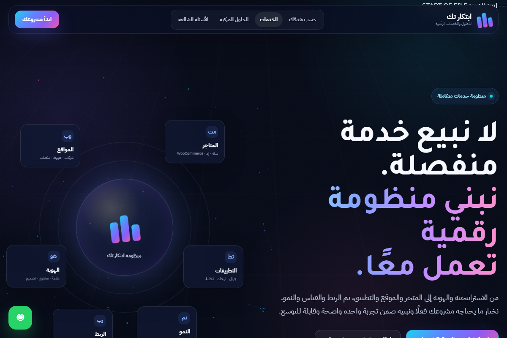

استراتيجية العلامة
تموضع وشخصية ورسالة وأولويات ظهور.
ناقش هذا المسار ←نربط الاستراتيجية باللغة البصرية واللفظية ثم نترجمها إلى واجهات ومحتوى قابل للاستخدام.

نحدد ما يحتاجه المشروع فعلًا بدل إنتاج ملفات لا تستخدم.
تموضع وشخصية ورسالة وأولويات ظهور.
ناقش هذا المسار ←شعار وألوان وخطوط وقواعد استخدام.
ناقش هذا المسار ←توكنز ومكونات وحالات قابلة للتوسع.
ناقش هذا المسار ←عناوين ورسائل وصفحات خدمات واضحة.
ناقش هذا المسار ←قوالب منتجات وبنرات ورسائل قرار.
ناقش هذا المسار ←أصول متناسقة مع الهوية والصفحة والهدف.
ناقش هذا المسار ←كل قرار بصري أو لغوي يجب أن يظهر في تجربة حقيقية.
فهم النشاط والجمهور والسياق الحالي.
تحديد الاتجاه والنظام والقواعد.
تطبيق الهوية على صفحات ومكوّنات فعلية.
مراجعة الاتساق وتسليم الأصول والقوالب.
شاركنا نشاطك والمواد الحالية وأين تظهر المشكلة.